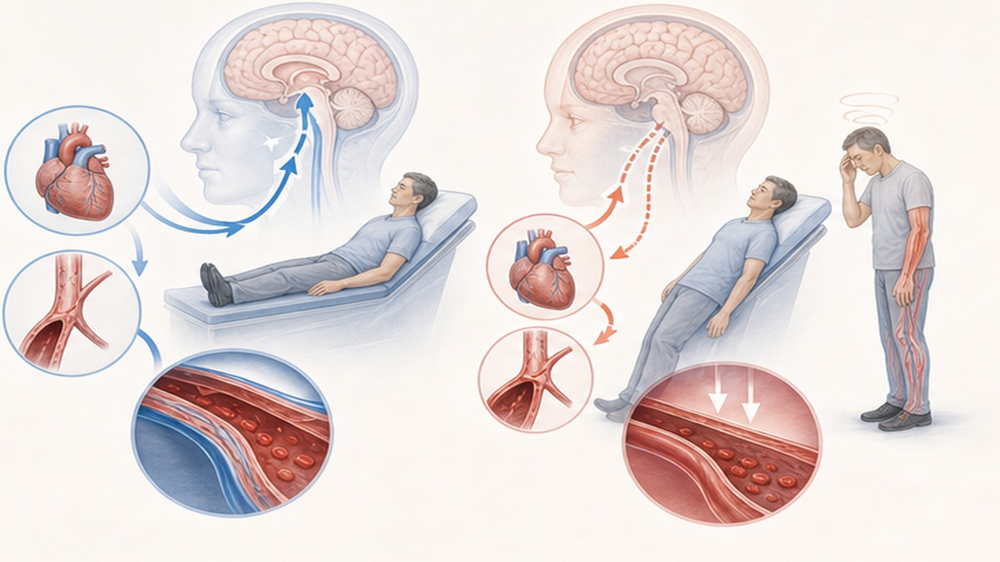
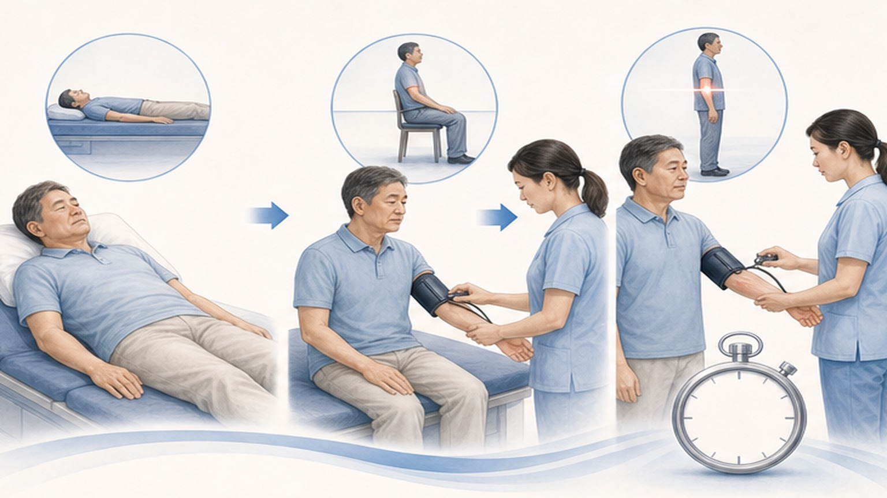
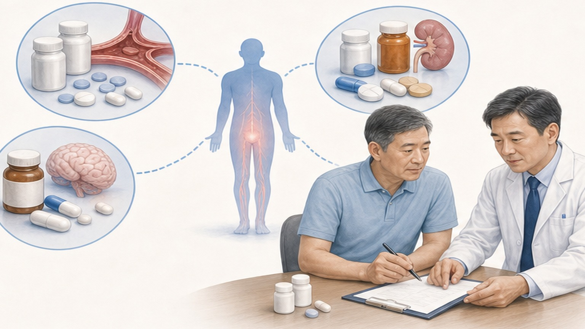
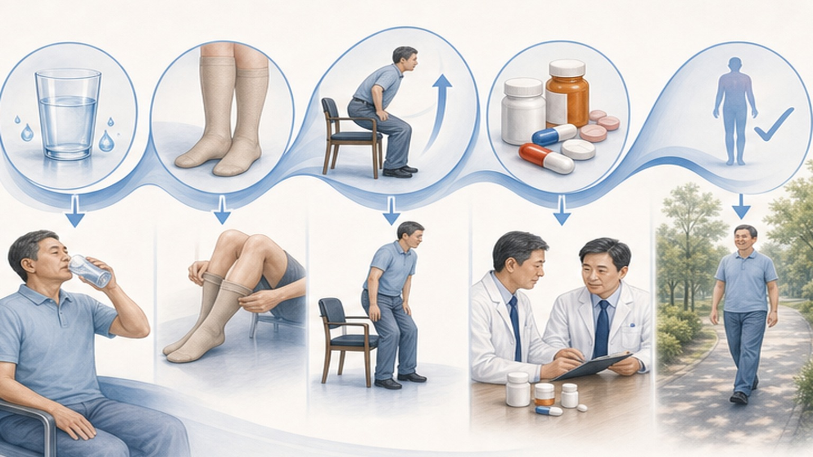

Management of
Orthostatic Hypotension
A Review — Moloney et al., JAMA Internal Medicine 2026
왜 중요한가
고령화 외래에서 어지럼·낙상 호소가 늘고, OH는 그 흔한 원인 중 하나
정의와 진단 기준
Classical OH + 3가지 변이형 — 시간축과 HR 반응으로 구분
정상 baroreflex와 OH의 분기점
기립 시 정상적으로 작동해야 할 보상 반사가 무너지는 곳에서 OH가 시작된다
기립 시 600–800 ml의 혈액이 하지로 이동하면, 압수용체(baroreceptor) 반사가 즉시 작동해 교감신경을 활성화하고 HR을 올리며 혈관을 수축시켜 BP를 유지한다.
이 정상 보상 반사가 다음 두 갈래에서 무너질 때 OH가 발생한다 — (1) neurogenic: 압수용체 둔화 또는 교감신경 활성 부전 자체 (자율신경부전), (2) non-neurogenic: 보상 반사는 살아 있지만 용적이 비어 있거나 약물이 혈관수축·심박출 반응을 차단하는 경우.

Neurogenic vs Non-neurogenic
치료 방향이 달라진다 — 원인 갈래를 먼저 정한다
- Parkinson's disease (PD)
- Multiple system atrophy (MSA)
- Pure autonomic failure (PAF)
- Diabetic autonomic neuropathy
- Amyloidosis (transthyretin / AL)
- Lewy body dementia
- 약물 유발 (가장 흔함)
- 용적 부족 — 탈수 · 출혈 · 빈혈
- 심박출량 저하 — HF · AS · MI 후
- 장기 와상 · deconditioning
- 부신부전 · 갑상선 이상
- 패혈증 · 알코올 · adrenal 결핍
외래 5분 진단 — Active Standing Test
5분 휴식 → 기립 직후 → 1분 → 3분, 네 시점의 BP/HR을 기록한다

즉시 점검할 OH 유발 약물
약물 검토는 비용 0의 가장 효율 높은 OH 중재 — 6개 카테고리를 빠르게 훑는다

비약물 치료 — 1차, 모든 환자에 적용
약물보다 먼저, 약물과 함께 — 6가지 핵심
약물 치료 알고리즘
비약물 + 약물 검토에도 증상 지속 시 — Step 1 → 2 → 3, 또는 병용
- Dose0.1–0.2 mg · qd
- Action혈장 용적 ↑
- MonitorK⁺ · BP · 부종 · BNP
- CautionHF · severe CKD 금기
- Dose2.5–10 mg · tid
- Actionα₁-agonist · 혈관수축
- Timing식전 30분 · 활동 전
- Caution취침 4시간 전 마지막
- Dose100–600 mg · tid
- ActionNE precursor
- Indicationneurogenic OH (PD/MSA)
- Note한국 가용성 제한

OH + Supine HTN 동반 — 균형 치료
치료의 가장 까다로운 시나리오 — 낮 BP를 올리려다 밤 BP를 더 올린다
사례 — 78세 여, 외래 어지럼 호소
교과서적 진단 흐름 + 약물 검토 우선의 실무 적용 예
임상 실무 6가지 핵심
노인 외래에서 OH는 흔하고, 진단·치료의 ROI는 약물 검토에 가장 크다
Management of Orthostatic Hypotension: A Review.
JAMA Intern Med. 2026.
jamainternmed.2026.0284